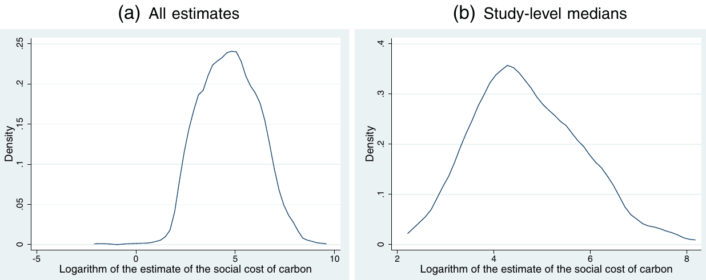
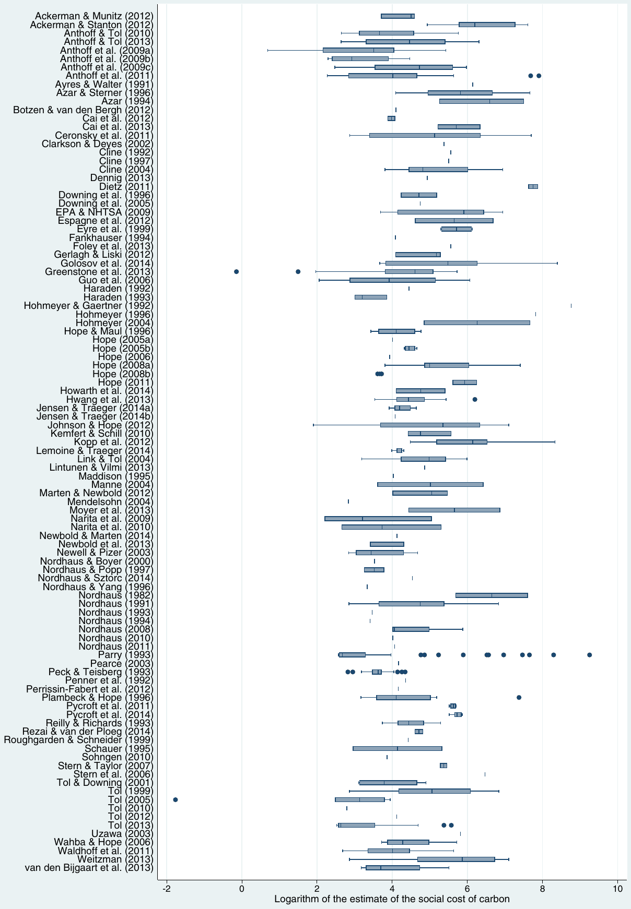
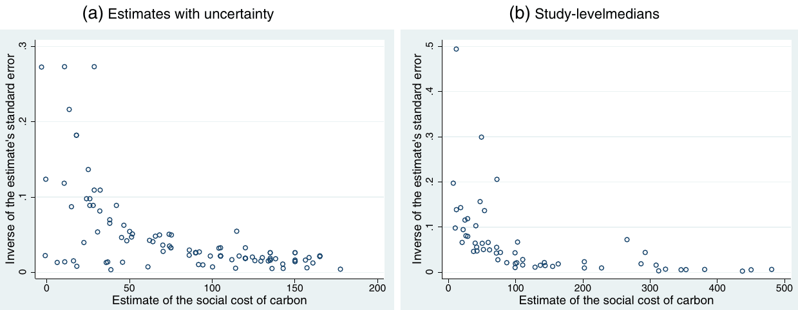

Selective Reporting and the Social Cost of Carbon
Tomas Havranek, Zuzana Irsova, Karel Janda, and David Zilberman (2015), "Selective Reporting and the Social Cost of Carbon." Energy Economics 51, 394-406. https://doi.org/10.1016/j.eneco.2015.08.009.
Tomas Havranek a,b, Zuzana Irsova b, Karel Janda b,c, David Zilberman d
a Czech National Bank, Czech Republic
b Charles University, Prague, Czech Republic
c University of Economics, Prague, Czech Republic
d University of California, Berkeley, United States
* Corresponding author. E-mail address: zuzana.irsova@ies-prague.org (Z. Irsova).
An online appendix with data and code is available at http://meta-analysis.cz/scc. Tomas Havranek acknowledges support from the Czech Science Foundation (grant #15-02411S); Zuzana Irsova acknowledges support from the Czech Science Foundation (grant #15-02411S) and the Grant Agency of Charles University (grant #558713); Karel Janda acknowledges support from the Czech Science Foundation (grants #P402/11/0948, #15-00036S, and #16-00027S). The research leading to these results received funding from the People Programme (Marie Curie Actions) of the European Union's Seventh Framework Programme FP7/2007-2013 under REA grant agreement number 609642. We thank Richard Tol for sending us his data set and are grateful to Jan Babecky, Nikolas Mittag, Jiri Schwarz, Diana Zigraiova, seminar participants at Charles University, and two anonymous referees of Energy Economics for their helpful comments. The views expressed here are ours and not necessarily those of our employers.
JEL classification: C83, Q54
Abstract
We examine potential selective reporting (publication bias) in the literature on the social cost of carbon (SCC) by conducting a meta-analysis of 809 estimates of the SCC reported in 101 studies. Our results indicate that estimates for which the 95% confidence interval includes zero are less likely to be reported than estimates excluding negative values of the SCC, which might create an upward bias in the literature. The evidence for selective reporting is stronger for studies published in peer-reviewed journals than for unpublished papers. We show that the findings are not driven by the asymmetry of the confidence intervals surrounding the SCC and are robust to controlling for various characteristics of study design and to alternative definitions of confidence intervals. Our estimates of the mean reported SCC corrected for the selective reporting bias range between USD 0 and 134 per ton of carbon at 2010 prices for emission year 2015.
Keywords: Social cost of carbon, Climate policy, Integrated assessment models, Meta-analysis, Selective reporting, Publication bias
1. Introduction
A key parameter for the formulation of climate policy is the social cost of carbon emissions. If the social cost of carbon was pinned down precisely, policy makers could use the parameter to set the optimal carbon tax. For this reason, dozens of researchers using different families of models have estimated the SCC—but their findings and the resulting policy implications vary greatly. Several previous studies have offered quantitative surveys of the literature (Tol, 2005b, 2008, 2011, 2013b), focusing especially on the characteristics of study design that may influence the reported estimates, but no study has discussed or tested for the potential selective reporting bias in the estimates of the social cost of carbon.
Selective reporting is the tendency of editors, referees, or authors themselves to prefer empirical estimates that are conclusive, have a particular sign supported by theory or intuition, or both. Also called the file-drawer problem or publication bias (we prefer the term selective reporting because the bias can be present in unpublished studies as well), it has been discussed in literature surveys since Rosenthal (1979). The problem of selective reporting is widely recognized in medical research, where many of the best journals now require prior registration of clinical trials as a necessary condition for any potential submission of results (Stanley, 2005). In a similar vein, the American Economic Association has agreed to establish a registry of randomized controlled experiments to counter selective reporting (Siegfried, 2012, p. 648).
Doucouliagos and Stanley (2013) conduct a large survey of meta-analyses (quantitative literature surveys) in economics and conclude that most fields suffer from selective reporting, which exaggerates the magnitude of the mean reported effect, and thus biases our inference from the literature. A recent survey among the members of the European Economic Association, Necker (2014), reveals that a third of economists in Europe admit that they have engaged in presenting empirical findings selectively so that the findings confirm their arguments and in searching for control variables until they get a desired result. A meta-analysis by Havranek et al. (2012) indicates that 40% of the estimates of the price elasticity of gasoline demand end up hidden in researchers' file drawers because of an unintuitive sign or statistical insignificance; this selective reporting exaggerates the mean reported price elasticity twofold.
Several studies examine selective reporting in the context of climate change research. The problem is widely discussed in phenology (Both et al., 2004; Gienapp et al., 2007; Menzel et al., 2006), and the evidence suggests that while selective reporting is a minor issue in multi-species studies, positive results from single-species studies are reported more often than neutral results (Parmesan, 2007). Maclean and Wilson (2011) conduct a meta-analysis of the relation between climate change and extinction risk and find mixed results concerning selective reporting, with evidence for the bias among estimates of extinction risk, but no bias among estimates of high extinction risk. Michaels (2008) examines 166 papers on climate change published in Science and Nature and argues that there is substantial evidence for selective reporting. Swanson (2013) indicates that many of the current model simulations of climate change are inconsistent with the observed changes in air temperature and the frequency of monthly temperature extremes, which might be due to selective reporting. In contrast, Darling and Côté (2008) investigate the relationship between climate change and biodiversity loss and find no evidence of selective reporting, and Massad and Dyer (2010) find no signs of selective reporting in the literature on the effects of climate change on plant–herbivore interactions.
Another motivation for the examination of potential selective reporting is the controversy concerning the scientific consensus on anthropogenic climate change between John Cook and colleagues on one side and Richard Tol on the other. Cook et al. (2013) collect almost 12,000 abstracts from peer-reviewed studies and conclude that 97% of them support the argument that climate change is human-made. Tol (2014) disagrees and has reservations about the way in which Cook et al. (2013) select papers for their survey. Cook et al. (2014), in turn, disagree with the response of Tol (2014) and point out several problems with Tol's arguments. From our perspective the main caveat of the Cook et al. (2013) survey is that it neither mentions nor corrects for potential selective reporting. Given how widespread the file-drawer problem is in many fields, the fact that 97% of studies report positive results does not necessarily translate into a 97% consensus of the scientific community that climate change is human-made. Because our prior about the sign of the relation between human activity and climate change is so strong, researchers may be less inclined to report neutral rather than large positive estimates of the relationship.1
In contrast to most subjects of meta-analysis in economics, the social cost of carbon is not estimated in a regression framework. Rather, the SCC is a result of a complex calibration exercise, and the uncertainty surrounding the estimates is usually determined via Monte Carlo simulations. Therefore, by definition the literature lacks the usual suspects when it comes to potential selective reporting: a specification search across models with different control variables, the choice of estimation technique, and the selection of the data sample. On the other hand, the authors have the liberty to choose among many possible values of the parameters that enter the computation and influence (in either direction) both the estimated magnitude of the SCC and the associated uncertainty. In a critical review of integrated assessment models, Pindyck (2013, p. 863) even argues that "these models can be used to obtain almost any result one desires." Despite the difficulty in computing the SCC, we believe that it is worth trying to pin down this crucial parameter. Testing for the potential selective reporting bias represents a part of this effort.
The remainder of the paper is structured as follows. Section 2 briefly discusses how the authors derive estimates of the social cost of carbon. Section 3 describes how we collect data for the meta-analysis. Section 4 explains the methods used in economics for the detection of selective reporting and addresses the specifics of their application in the case of the social cost of carbon. Section 5 presents the results of the meta-regression analysis based on tests of funnel asymmetry. Section 6 contains additional results and robustness checks. Section 7 concludes the paper. A list of studies included in the meta-analysis and summary statistics of regression variables are reported in the Appendix.
2. Estimating the social cost of carbon
The purpose of this section is to outline the intuition behind the estimation of the SCC and discuss the results of the related literature, not to provide a detailed overview of the estimation methodology. For the latter we refer the reader to Pindyck (2013) and Greenstone et al. (2013).
The first estimate of the shadow price of carbon emissions dates back to Nordhaus (1982). In the early 1990s William Nordhaus developed the first predecessor of the current generation of models, Nordhaus (1991), which he applied to the US economy. Later, Nordhaus extrapolated his country-level estimates of welfare effects to a global estimate, which has become the norm in the literature. Several researchers followed this approach (for example, Ayres and Walter, 1991), but it was not before Fankhauser (1994) that an uncertainty component was introduced into the analysis. In the following years the literature differentiated further and more distinct models were introduced: among others, Tol (1995), Nordhaus and Yang (1996), and Plambeck and Hope (1996).
The workhorse tools for the estimation of the SCC are the so-called integrated assessment models. In simple terms, an integrated assessment model puts the expected climate effects of carbon emissions into the framework of economic growth theory. The social cost of carbon is then calculated approximately as the difference between present and future GDP as influenced by damage resulting from carbon emissions, discounted back to the present time. The three most commonly used models are DICE (Dynamic Integrated Climate and Economy) developed by William Nordhaus (Nordhaus, 2008), PAGE (Policy Analysis of the Greenhouse Effect) developed by Chris Hope (Hope, 2008), and FUND (Climate Framework for Uncertainty, Negotiation, and Distribution) developed by Richard Tol (Tol, 2002a,2002b). Each model specifies how climate impacts result in economic damages in a different way (for more details on the differences in methodology see, for example, NRC, 2009; IWG, 2010,2013).
The mapping of carbon emissions to economic costs is associated with significant uncertainties. The authors must rely on trends and scenarios taken from other sources, which involves simplification of complex processes. The authors must make assumptions about the level of current and future emissions (under different scenarios), about how these emissions translate into atmospheric gas concentrations (resulting from current, past, and future emissions), how these concentrations translate into warming (climate sensitivity), and how the warming translates into economic damages (projections of technological change, social utility assumptions, and damage functions). A major source of uncertainty is linked to the discount rate in monetary valuations. The resulting SCC is either a best-guess value of the calibration provided by the researcher or a mean/median value with a probability distribution, usually constructed using a Monte Carlo simulation. The reported values of the SCC vary widely.
Several attempts have been made to synthesize the published information on the optimal carbon tax. The IPCC (1995) literature review reports the range of best guesses from existing studies published until 1995: for carbon emitted in 1995, the range of the estimates covers 5–125 USD/tC (at 1990 prices). In IPCC (2007), the values for 2005 emissions are extracted from about 100 estimates and range from −11 USD/tC to 348 USD/tC with an average value of 44 USD/tC (at 2005 prices). Both studies find the net damage costs of climate change to be significant and increasing over time. The IPCC emphasizes that these intervals do not represent the full range of uncertainty.2
The first comprehensive meta-analysis on the topic, Tol (2005b), collects 103 estimates from 28 different studies. Combining all the estimates into a composite probability density function, Tol (2005b) finds a median estimate of 14 and a mean of 93, not exceeding 350 with a 95% probability. The estimates are driven by the choice of the discount rate and equity weights; Tol (2005b) also finds that the largest estimates with substantial uncertainty come from studies not published in peer-reviewed journals. In an update of the meta-analysis, Tol (2008) confirms his previous findings using 211 estimates collected from 47 studies; moreover, he identifies a downward trend in the reported SCC. Using the Fisher–Tippett fat-tailed distribution for the probability density function, for emission year 1995 discounted to 1995 he estimates the median SCC at 74 and the mean at 127, not exceeding 453 with a probability of 95%.
In another update, Tol (2011) performs a meta-regression analysis of 311 estimates of the social cost of carbon. He estimates the global mean SCC to be 177 (in 2010 USD and for emission year 2010) and the median to be 116 with a standard deviation of 293, not exceeding 669 USD/tC with a 95% probability. A lower discount rate leads to a higher SCC, and peer-reviewed estimates and estimates from newer studies seem to be less pessimistic. In the most recent survey, Tol (2013b) adds another 277 estimates from 14 studies to the meta-analysis and gets a mean estimate of 196 and a median of 135 with a standard deviation of 322.3
3. The SCC data set
The first step of any meta-analysis is the collection of results from primary studies that report estimates of the effect in question. We take advantage of the previous meta-analyses of the literature estimating the social cost of carbon and start with the data set provided by Richard Tol. The data set covers studies published until mid-2012 and includes 79 papers. Additionally, we search in Google Scholar for new studies published in 2012 or later; the search query is available in the online appendix at http://meta-analysis.cz/scc. We identify 22 new studies, bringing the total number of papers included in the meta-analysis to 101, listed in the Appendix. Most studies report multiple estimates of the social cost of carbon, for example with different assumptions concerning the pure rate of time preference or different economic scenarios. We collect all of the estimates, which yield 809 observations. To put these numbers into perspective, we refer to the recent survey of meta-analyses in economics, Doucouliagos and Stanley (2013), who note that the largest meta-analysis conducted so far uses 1460 estimates from 124 studies.
Aside from collecting additional studies, we also make adjustments in the original data set provided by Tol. Some studies available as mimeographs at the time when Tol collected the data have been published since 2012, and for these studies we checked the reported results and, if needed, changed the coding of the data accordingly. We also collect additional variables that may help explain the heterogeneity in the estimates of the social cost of carbon. Because the estimates of the SCC are reported for different emission years and evaluated in nominal US dollars, we have to recompute them to a common metric. We choose 2010 as the price year and 2015 as the emission year; for the normalization of the emission year we assume constant growth of the SCC of 3.11% per year, the mean growth of the estimated real SCC between emission years in our data set (more details are available in the online appendix at http://meta-analysis.cz/scc). Some studies report the SCC as the cost of emission of a molecule of carbon dioxide, while others refer to the cost of emission of an atom of carbon. We recompute the estimates so that they relate to the cost per metric ton of carbon.
We add the last study to our data set on August 1, 2014. At that time all the studies taken together had obtained almost 17,000 citations in Google Scholar (or almost 1700 on average per year), which shows the scientific impact of the literature estimating the SCC. The first estimate was reported in 1982, but the median study in our data set comes from 2008: more and more studies on the topic are reported each year. Out of the 101 studies in our sample, 63 are published in peer-reviewed journals; the remaining 38 studies are book chapters, government reports, mimeographs, and other publications for which peer review is not guaranteed. We include the latter group of studies as well, partly following the advice of Tom Stanley to "better err on the side of inclusion in meta-analysis" (Stanley, 2001, p. 135) and partly because we are interested in any potential differences in selective reporting between published and unpublished studies. Some of the studies are more theoretical than empirical in nature, and their main goal is intuition, not prediction; nevertheless, as a rule we try to include all studies that provide estimates of the SCC. Our approach to data collection and analysis is consistent with the Meta-Analysis of Economics Research Reporting Guidelines (Stanley et al., 2013).
Fig. 1 shows the distribution of the estimates of the social cost of carbon in our data set. Because the distribution is skewed to the right (the mean is 290; the median is 99), we choose the logarithmic scale for the depiction of the data set. To be able to take the log of all the estimates, we add 13 to the observations (the smallest estimate is −12.8). Panel A of Fig. 1 shows the distribution for all the estimates; panel B shows the distribution of the study-level median estimates: both distributions are approximately log-normal, which is corroborated by the skewness and kurtosis test of normality, although the distribution of the medians is slightly skewed to the right, even after taking logs. The mean and median of the study-level median estimates are smaller than those of all the estimates (201 vs. 290 and 82 vs. 99, respectively), which suggests that studies which obtain a larger SCC in general report more estimates.
Fig. 2 depicts the box plot of the estimates reported in individual studies. Even with the logarithmic scale, the figure shows substantial heterogeneity across studies. It follows that it is important to control for the methodology of the SCC computation employed in the study and to cluster standard errors in the resulting regressions at the study level because estimates reported within individual studies are unlikely to be independent. All the variables that we collect for this meta-analysis are summarized and explained in Table 1; the table corresponds to the entire data set of 809 observations. Summary statistics for the two additional data sets (study medians and estimates with reported uncertainty) are shown in the Appendix.
The construction of the approximate standard errors for the estimates of the social cost of carbon (the second and third items in Table 1) will be described in detail in the following two sections. We can only approximate standard errors for estimates for which the authors of primary studies report a measure of uncertainty, usually a confidence interval. Only 267 out of the 809 estimates in our data set are reported together with a measure of uncertainty. These estimates are on average much larger than the rest of the data: the mean estimate with uncertainty is 411 (in contrast to 290 when all the estimates are considered) and the median is 241 (in contrast to 99). In other words, authors who provide a probabilistic distribution of estimates tend to report much larger median values of the SCC than authors who only report their best-guess estimates.
We include a dummy variable to take into account whether the study in which the estimate is reported is published in a peer-reviewed journal. We also control for the year of publication of the study: perhaps novel methods of estimating the SCC yield systematically different results, and the literature converges to a consensus value. We include dummy variables for the case where the reported estimate corresponds to the median and mean of the distribution; the base category corresponds to best-guess estimates. Some studies estimate average costs rather than marginal damage costs, and we control for this aspect of methodology as well. We include dummy variables for studies that examine dynamic impacts of climate change and studies that use internally consistent climate and economic scenarios to simulate the evolution of emissions.

Three families of integrated assessment models are predominant in the estimation of the social cost of carbon: the FUND, PAGE, and DICE (RICE) models; most author teams also consistently use the same family of models. We include three dummy variables to distinguish between these approaches. Some estimates are constructed as weighted averages of several model approaches, and a few studies use models independent of the three main families. An important feature in estimating the SCC is the assumed discount rate, especially the pure rate of time preference—we control for the value assumed in the computation, but some authors do not report it; we have data on the pure rate of time preference for only 633 estimates. Next, some studies employ equity weights in the computation, and we control for this aspect of methodology. We also include a dummy variable that equals one if the estimate corresponds to the optimal abatement path and can be interpreted as a Pigovian tax on carbon emissions. Finally, we control for the number of Google Scholar citations of the study and the SciMago journal rank of the outlet (the SciMago journal rank based on Scopus citations is available for more journals in our sample than the Thompson Reuters impact factor and the RePEc impact factor): perhaps these study characteristics capture aspects of quality not covered by the methodology variables introduced above.
In the next step we examine how method and publication characteristics are correlated with the reported estimates of the SCC. The first two columns of Table 2 report the results of a regression of the estimates on the estimates' characteristics; the third and fourth columns use the logarithm of the estimate of the SCC on the left-hand side of the regression. In all cases we cluster standard errors at the study level to take into account within-study correlation in SCC estimates. The results suggest that studies published in peer-reviewed journals report, on average, substantially smaller estimates of the social cost of carbon. This evidence is consistent with previous research (Tol, 2011), and can be interpreted in two ways. The first potential interpretation, suggested by Tol (2011), argues that many large estimates of the SCC that we observe in the literature are not verified by the peer-review process, and thus may be of questionable quality. The second possible interpretation, in line with the topic of this paper, would suggest that the peer-review process results in a selective reporting bias in favor of more conservative estimates of the SCC. We will examine this issue in detail in the next two sections.
Table 2 also shows that the year of publication is not systematically related to the magnitude of the reported SCC. (We also experimented with several specifications that were nonlinear in the year of publication, but obtained no statistically significant results.) In contrast, Tol (2011) finds that newer studies tend to report smaller estimates of the SCC. Our results are different because we include new studies published between 2012 and 2014; these studies often report large estimates of the SCC as they try to incorporate potential catastrophic outcomes of climate change. Next, we find that authors who report uncertainty associated with their central estimates (usually confidence intervals around the mean or median expected SCC values) tend to report larger SCCs. The evidence on the importance of estimating marginal instead of average costs is mixed: we only find significant results in the case of log-level regressions, which suggests that estimating average costs exaggerates the reported SCC. Authors investigating dynamic impacts of climate change report, on average, smaller estimates of the SCC.
Studies employing internally consistent economic and climate scenarios tend to report larger estimates of the SCC, but the effect is only statistically significant in the log-level specifications of the regression. There is also some evidence that authors employing a variant of the PAGE model report, ceteris paribus, smaller estimates of the SCC than other studies, but the effect is not statistically significant at the 5% level in all specifications. The log-level regressions suggest that using equity weights results in larger reported SCCs. In contrast, it does not seem to be important for the magnitude of the estimated SCC whether the estimate is consistent with the optimal abatement path and thus represents a Pigovian tax. Similarly, the number of citations of the study is not systematically related to the reported results. The ranking of the journal, on the other hand, is correlated with the estimated SCC: studies published in better journals tend to report larger estimates (which casts some doubt on Tol's claim that large estimates of the SCC are often not verified by the peer-review process). Finally, as expected, a larger assumed pure rate of time preference leads to smaller estimates of the SCC.

| Variable | Description | Obs. | Mean | Std. dev. |
|---|---|---|---|---|
| SCC | The reported estimate of the social cost of carbon in USD per ton of carbon (normalized to emission year 2015 in 2010 dollars) | 809 | 290 | 635 |
| Standard error | The approximate standard error of the estimate computed from the reported lower bound of the confidence interval | 267 | 162 | 235 |
| Upper SE | The approximate standard error of the estimate computed from the reported upper bound | 267 | 1182 | 1921 |
| Reviewed | =1 if the study was published in a peer-reviewed outlet | 809 | 0.80 | 0.40 |
| Publication year | The year of publication of the study (base: 1982) | 809 | 24.7 | 7.46 |
| Mean estimate | =1 if the reported SCC estimate is the mean of the distribution | 809 | 0.23 | 0.42 |
| Median estimate | =1 if the reported SCC estimate is the median of the distribution | 809 | 0.21 | 0.41 |
| Marginal costs | =1 if the study estimates marginal damage costs (damage from an additional ton of carbon emitted) rather than average costs (the total impact divided by the total emissions of carbon) | 809 | 0.96 | 0.20 |
| Dynamic impacts | =1 if the study examines dynamic impacts of climate change or uses a dynamic model of vulnerability | 809 | 0.40 | 0.49 |
| Scenarios | =1 if the study uses climate and economic scenarios that are internally consistent; a few studies use arbitrary assumptions about climate change. | 809 | 0.82 | 0.39 |
| FUND | =1 if the authors use the FUND model or derive their model from FUND | 809 | 0.40 | 0.49 |
| DICE or RICE | =1 if the authors use the DICE/RICE model or derive their model from DICE/RICE | 809 | 0.46 | 0.50 |
| PAGE | =1 if the authors use the PAGE model or derive their model from PAGE | 809 | 0.19 | 0.39 |
| PRTP | The pure rate of time preference assumed in the estimation | 633 | 1.23 | 1.57 |
| Equity weights | =1 if equity weighting is applied | 809 | 0.18 | 0.38 |
| Pigovian tax | =1 if the estimate is computed along a trajectory of emissions in which the marginal costs of emission reduction equal the SCC; the estimate then corresponds to a Pigovian tax. | 809 | 0.29 | 0.45 |
| Citations | The logarithm of the number of Google Scholar citations of the study | 809 | 3.54 | 1.30 |
| Journal rank | The SciMago journal rank based on the impact factor extracted from Scopus | 809 | 1.32 | 2.33 |
Notes: Data are collected from studies estimating the social cost of carbon. The data set is available at http://meta-analysis.cz/scc.
4. Detecting selective reporting
In this section we provide an overview of the tools that are available for the examination of selective reporting in economics. Three methods are commonly used to detect potential selective reporting bias in the literature: Hedges' model, the funnel plot, and meta-regression analysis. Concerning the first method, Hedges (1992) introduces a model of selective reporting which assumes that the probability of reporting of estimates is determined by their statistical significance. The probability of reporting only changes when a psychologically important p-value is reached: in economics these threshold values are commonly assumed to be 0.01, 0.05, and 0.1. When no reporting bias is present, all estimates, significant and insignificant at conventional levels, should have the same probability of being published. The augmented model developed by Ashenfelter et al. (1999) allows for heterogeneity in the estimates of the underlying effect. The augmented log-likelihood function is (Ashenfelter et al., 1999, p. 468):
where would be the estimates of the social cost of carbon. The parameter is the average underlying SCC, and , where are the reported standard errors of the estimates and measures the heterogeneity in the estimates. The probability of reporting is determined by the weight function . In this model is a step function associated with the p-values of the estimates. represents the probability that an estimate will be assigned weight . For the first step, p-value < 0.01, is normalized to 1 and the author evaluates whether the remaining three weights differ from this value. is a vector of the characteristics of estimate . In the absence of selective reporting the meta-analyst is not able to reject the hypothesis ; that is, estimates with different levels of statistical significance have the same probability of being reported.
The second method of detecting selective reporting is a visual examination of the so-called funnel plot (Egger et al., 1997). The funnel plot is a scatter plot of the estimated coefficients (in our case the reported estimates of the social cost of carbon) on the horizontal axis and the inverse of the standard error on the vertical axis. The estimates with the smallest standard error are close to the top of the funnel and are tightly distributed. As the standard error increases, the dispersion of the estimates increases as well, which yields the shape of an inverted funnel with a sharp tip at the top and a wide base at the bottom. In the absence of selective reporting the funnel should be symmetrical: all imprecise observations have the same probability of being reported. Even if the true effect is positive, due to the laws of chance we should observe some negative estimates with large standard errors (as well as large estimates with large standard errors). If, in contrast, some estimates (for example, the negative ones) are systematically omitted, the funnel becomes asymmetrical.
The third method used to investigate potential selective reporting is closely related to the funnel plot, but uses meta-regression analysis to statistically examine the degree of funnel asymmetry. When selective reporting is absent from the literature the estimates of the SCC will be randomly distributed around the mean estimate of the social cost of carbon, SCC0 (due to the central limit theorem). But if authors discard some estimates because they are statistically insignificant at the conventional levels or have a sign that is inconsistent with the theory or the mainstream prior, the reported estimates of the SCC will be correlated with their standard errors (Card and Krueger, 1995):
where SCCi is the estimate of the social cost of carbon, SCC0 denotes the average underlying value of the social cost of carbon, Se(SCCi) denotes the standard error of SCCi, measures the magnitude of selective reporting, and ui is an error term. Specification (2) can be thought of as a test of the asymmetry of the funnel plot: the regression results from rotating the axes of the funnel plot and inverting the values on the new horizontal axis. A statistically significant estimate of provides formal evidence for funnel asymmetry, and thus for selective reporting. Note that close to two is consistent with a situation where only positive and statistically significant SCC estimates (that is, the estimates for which the corresponding 95% confidence intervals exclude zero) are selected for reporting and other estimates are hidden in file drawers. Since specification (2) is heteroskedastic (the dispersion of the dependent variable increases when the values of the independent variable increase), in practice meta-analysts often estimate it by weighted least squares with the inverse of the standard error taken as the weight (Stanley, 2005):
| SCC All estimates | SCC PRTP | Log SCC All estimates | Log SCC PRTP | |
|---|---|---|---|---|
| Reviewed | −187.1*** (65.34) | −149.2* (78.37) | −0.741*** (0.225) | −0.574** (0.253) |
| Publication year | −4.877 (6.595) | −4.004 (7.129) | 0.0212 (0.0177) | 0.0241 (0.0246) |
| Mean estimate | 138.8*** (52.64) | 256.7*** (65.96) | 0.439** (0.182) | 0.914*** (0.227) |
| Median estimate | 316.4*** (76.60) | 243.0*** (72.92) | 1.366*** (0.252) | 1.185*** (0.306) |
| Marginal costs | −331.7 (272.0) | −380.7 (287.2) | −1.204*** (0.387) | −1.179*** (0.414) |
| Dynamic impacts | −213.1*** (78.70) | −330.0** (152.5) | −0.482* (0.272) | −0.946** (0.429) |
| Scenarios | 140.5 (124.3) | 199.8 (148.2) | 0.745*** (0.235) | 0.676* (0.357) |
| FUND | 45.66 (99.22) | 33.65 (140.0) | −0.270 (0.295) | −0.202 (0.393) |
| DICE or RICE | 75.01 (56.30) | −70.24 (84.98) | 0.240 (0.160) | −0.531 (0.340) |
| PAGE | −173.2** (76.14) | −304.9** (145.7) | −0.147 (0.199) | −0.679* (0.353) |
| Equity weights | 31.31 (52.89) | 73.26 (71.41) | 0.392* (0.202) | 0.554** (0.262) |
| Pigovian tax | −85.01 (81.76) | −46.26 (72.78) | −0.226 (0.253) | 0.137 (0.295) |
| Citations | −20.58 (29.55) | −24.49 (32.32) | 0.0568 (0.0775) | 0.116 (0.0790) |
| Journal rank | 36.43*** (8.943) | 26.02* (13.98) | 0.102*** (0.0270) | 0.0107 (0.0402) |
| PRTP | −112.7*** (22.64) | −0.425*** (0.0913) | ||
| Constant | 774.6** (366.4) | 999.1** (431.6) | 4.800*** (0.633) | 5.384*** (0.695) |
| Observations | 809 | 633 | 809 | 633 |
Notes: The table presents the results of regression , where is the i-th estimate of the social cost of carbon reported in the j-th study and X is a vector of the estimate's characteristics. In the last two columns we use the logarithm of the estimates of the SCC as the dependent variable; because the smallest estimate in our data set is −12.8, we add 13 to all estimates of the social cost of carbon before taking logs. Estimated by OLS; standard errors are clustered at the study level and shown in parentheses. PRTP = only estimates for which the authors report the pure rate of time preference used in the computation. ***, **, and * denote statistical significance at the 1%, 5%, and 10% levels respectively.
Because most studies provide more than one estimate of the SCC, it is important to take into account that estimates reported in one study are likely to be correlated. One way of addressing this issue is to employ the so-called mixed-effects multilevel model (for an early application in meta-analysis, see, for example, Doucouliagos and Stanley (2009)), which assumes unobserved between-study heterogeneity. We specify the mixed-effects model following Havranek and Irsova (2011), Havranek and Kokes (2015), and Zigraiova and Havranek (2015):
where i and j denote estimate and study subscripts and denotes the approximate t-statistic. The overall error term () now breaks down into study-level random effects () and estimate-level disturbances (). The model is estimated by restricted maximum likelihood. The problem with the mixed-effects model is that it assumes no correlation between study-level random effects and the independent variables. This assumption is rarely tenable in practice, and we thus prefer to run the fixed-effects model and cluster standard errors at the study level.
The three methods of detecting selective reporting introduced above are designed for regression estimates of the parameter in question and require the ratio of the point estimate to the standard error to be t-distributed. In contrast, estimates of the social cost of carbon are based on calibration and assumptions concerning the uncertainty about parameters entering the computation. For most estimates of the SCC the authors do not report confidence intervals, and even if they do, we cannot assume the ratio of the point estimate to the standard error to have a t-distribution because of the asymmetries in the uncertainty surrounding the SCC (especially catastrophic events). In particular, Hedges' method assumes that authors decide on which estimates to report depending on whether the estimates surpass a certain p-value threshold, which is unlikely to be the driving factor of selective reporting in the literature on the SCC. In contrast, we can use the intuition behind the two methods based on the analysis of funnel plot asymmetry: small and large estimates with the same standard error should have the same probability of being reported.
To be able to employ the methods based on the funnel plot, we need to compute the approximate standard errors of the estimates. Few authors report the standard errors directly, and only 267 out of the 809 estimates are reported together with a measure of uncertainty from which confidence intervals can be computed (usually 95% confidence intervals). The confidence intervals of the estimates of the SCC are typically asymmetrical, which means that for the approximation of the standard error we have to choose whether to use the lower or upper bound of the confidence interval. We choose the lower bound, because we assume that any potential selective reporting in the literature will be associated with the sign of the estimate and the authors' confidence that the true SCC is nonzero.4 We additionally examine whether the asymmetry of the confidence intervals reported by the authors affects our results concerning potential selective reporting in the literature; a similar problem in the analysis of selective reporting is discussed in detail by Rusnak et al. (2013).
Because for most estimates of the SCC the authors do not report confidence intervals or other measures of uncertainty, we also choose an alternative approach for the computation of approximate standard errors. From each study we take the median estimate of the SCC and then construct the standard error as the difference between the 50th and the 16th percentile of the distribution of estimates. (We only use studies that report multiple estimates of the SCC.) The standard errors are computed under the simplifying assumption that the estimates in each study are normally distributed. Most studies produce an asymmetric distribution of estimates, but we are interested in quantifying the confidence of the authors that their estimate of the social cost of carbon is different from zero, which is analogous to statistical significance for classical regression estimates used in economic meta-analyses. We expect that selective reporting in the literature would manifest itself as a tendency to report less uncertainty (a smaller approximate standard error computed from the lower bound of the confidence interval or the distribution of estimates in a study) for smaller estimates of the SCC in absolute terms. Of course, this second approach is experimental and we only include it as a robustness check that allows us to exploit a larger part of our data set. As far as we know, this paper represents the first attempt to quantify potential selective reporting among simulated model results.
5. Meta-regression results
Fig. 3 reports two funnel plots for the literature estimating the social cost of carbon: the funnel in panel A corresponds to estimates for which the authors report a measure of uncertainty, while the funnel in panel B corresponds to study-level medians computed from all observations reported in the study. Both scatter plots resemble the right-hand part of an inverted funnel; the left-hand part is missing: few negative estimates of the social cost of carbon are reported. The funnels are clearly asymmetrical, with smaller estimates having typically smaller standard errors—that is, reporting less uncertainty in the downward direction. Large point estimates of the SCC are usually associated with a lot of uncertainty and do not exclude the possibility of a small positive SCC. It is remarkable that the funnels have a similar shape even though the method of computing the approximate standard errors differs considerably between the two cases.

Panel A of Table 3 shows the results of funnel asymmetry tests for the sample of estimates with uncertainty; in all specifications we cluster standard errors at the study level. In the first column we run a simple OLS regression of point estimates of the SCC on the approximate standard errors. The slope coefficient in the regression is positive and statistically significant, which corroborates our intuition based on funnel plots: larger estimates of the SCC are associated with larger downward uncertainty, and vice versa. The estimated slope coefficient equals approximately 1.7, which corresponds to “substantial” selective reporting bias according to the classification by Doucouliagos and Stanley (2013). We have noted that a slope coefficient close to 2 would be consistent with a situation where researchers systematically omitted estimates for which the 95% confidence interval included zero.
The constant in the regression can be interpreted as the mean estimate of the SCC when uncertainty about the SCC approaches zero (that is, corrected for any potential selective reporting), and is large and statistically significant in this specification, though smaller than the simple mean of all estimates. In the second column we add study-level fixed effects; in this way we filter out all study-specific characteristics that may influence the reported estimates. The result concerning the extent of selective reporting is similar to the previous case, but the estimate of the underlying SCC is now statistically insignificant at conventional levels.
In the next specification we weigh the estimates by the inverse of their approximate standard error. This weighted-least-squares specification has two benefits, for which it has commonly been used in meta-analysis: see, for example, Stanley (2005). First, it corrects for heteroskedasticity in the baseline regression, where the independent variable (the standard error of the estimate of the SCC) is a measure of the dispersion of the dependent variable (the magnitude of the estimate of the SCC). Second, by definition it gives more weight to results with smaller standard errors, which further alleviates the effects of selective reporting. The results are similar to the previous specification, but the coefficient associated with selective reporting is even larger—2.5, which corresponds to “severe” selective reporting based on the guidelines by Doucouliagos and Stanley (2013)—and statistically significant at the 1% level.
In the fourth column we use weighted least squares again, but instead of the standard error the weight is now the inverse of the number of estimates reported in each study (following, for example, Havranek et al., 2015). In unweighted regressions, studies that report many estimates get overrepresented and influence the results more heavily than studies with few reported estimates. Weighting by the inverse of the number of estimates reported per study seems natural because it gives each study approximately the same influence on the results.
Compared to the baseline OLS regression, this specification yields smaller estimates of both the selective reporting parameter and the underlying mean SCC. The coefficient representing selective reporting is still statistically significant at the 5% level, and its extent would still be classified as substantial. In contrast, the coefficient that captures the mean effect corrected for the selective reporting bias is not statistically significant at conventional levels.
Finally, we also employ the mixed-effects multilevel model and report the results in the last column of panel A in Table 3. The mixed-effects model allows for random differences in the extent of the underlying SCC across studies and also gives each study approximately the same weight. The results corroborate the evidence reported in the previous columns concerning statistically significant and substantial selective reporting. The estimate of the underlying value of the social cost of carbon is once again statistically insignificant, and here even negative.
| OLS | FE | Std. err. | Study | ME | |
|---|---|---|---|---|---|
| Panel A | |||||
| Standard error | 1.705** (0.630) | 1.889** (0.762) | 2.467*** (0.480) | 1.213** (0.527) | 1.819*** (0.0825) |
| Constant | 134.1** (58.16) | 104.2 (123.9) | 10.27 (7.361) | 63.14 (40.12) | −18.69 (48.43) |
| Observations | 267 | 267 | 267 | 267 | 267 |
| Panel B | |||||
| Standard error | 1.662** (0.663) | 1.907** (0.779) | 2.451*** (0.538) | 0.780 (0.548) | 1.835*** (0.0843) |
| Upper SE | 0.0246 (0.0254) | −0.0109 (0.00676) | 0.00283 (0.0107) | 0.222 (0.143) | −0.00788 (0.0100) |
| Constant | 112.0** (50.00) | 114.1 (118.6) | 9.555 (6.133) | 45.29 (29.63) | −17.78 (48.81) |
| Observations | 267 | 267 | 267 | 267 | 267 |
Notes: Panel A presents the results of regression , where is the i-th estimate of the social cost of carbon reported in the j-th study and is the corresponding approximate standard error computed from the lower bound of the reported confidence interval. Panel B presents the results of regression , where is the corresponding approximate standard error computed from the upper bound of the reported confidence interval. The standard errors of the regression parameters are clustered at the study level and shown in parentheses. FE = study-level fixed effects. Std. err. = weighted by the inverse of the standard error. Study = weighted by the inverse of the number of estimates reported per study. ME = study-level mixed effects. ***, **, and * denote statistical significance at the 1%, 5%, and 10% levels respectively.
In panel B of Table 3 we examine whether our results concerning selective reporting are influenced by the asymmetry of the confidence intervals that the authors report for their estimates of the social cost of carbon. The asymmetry of the confidence intervals reported in individual studies is not an issue per se: many applications of meta-analysis quote the central limit theorem, which would imply that estimates should be symmetrically distributed in the absence of selective reporting even if the individual distributions are skewed. The problem is that the crucial assumption of the central limit theorem, independence of individual studies and estimates, is unlikely to hold in this case.
To see whether asymmetry drives our results, we need to include an interaction term of the approximate standard error computed based on the lower bound of the confidence interval and the ratio of the standard error computed from the upper bound and from the lower bound. This means that we can simply add an independent variable that captures the approximate standard error computed based on the upper bound (SE ⋅ SE up/SE = SE up), and Table 3 shows that it is statistically insignificant in all cases. All other results are qualitatively similar to the baseline regression, except for the specification where we use the inverse of the number of estimates reported per study as the weight—the coefficient corresponding to selective reporting loses statistical significance. In general, however, the results show that the evidence for selective reporting identified in the previous regressions is not substantially affected by the asymmetry of the individual confidence intervals.
In Table 4 we repeat the previous exercise for the study-level median estimates. In this setting, however, we have to omit the fixed-effects model, the mixed-effects model, and the weighted-least-squares regression with the inverse of the number of observations reported per study taken as the weight. Therefore, we only report two sets of results, an OLS regression and a specification where the estimates are weighted by the inverse of their standard error; both are run for the baseline relation between the estimates of the SCC and their standard errors and for the extended specification that includes the interaction of the standard error and the ratio of the upper and lower standard error (which simplifies to the upper standard error). The results concerning selective reporting are consistent with the evidence reported in Table 3: we obtain estimates of the selective reporting bias that are both statistically significant at the 5% level and “substantial” according to the classification by Doucouliagos and Stanley (2013). In contrast to Table 3, however, we find consistently significant estimates of the mean SCC corrected for selective reporting: approximately between 20 and 60.
| OLS | Weighted | OLS | Weighted | |
|---|---|---|---|---|
| Standard error | 1.506*** (0.372) | 1.936*** (0.307) | 1.502*** (0.413) | 1.958*** (0.307) |
| Upper SE | 0.00387 (0.0496) | −0.0295*** (0.00540) | ||
| Constant | 61.07*** (16.47) | 21.06*** (5.957) | 60.53*** (15.28) | 26.01*** (6.069) |
| Observations | 68 | 68 | 68 | 68 |
Notes: Columns 1 and 2 present the results of regression , where is the median estimate of the social cost of carbon reported in the j-th study and is the corresponding approximate standard error computed from the distribution of estimates in the study. Columns 3 and 4 present the results of regression , where is the corresponding approximate standard error computed from the 84th percentile of the distribution of the estimates in the study. The standard errors of the regression parameters are robust to heteroskedasticity and shown in parentheses. Weighted = weighted by the inverse of the standard error. ***, **, and * denote statistical significance at the 1%, 5%, and 10% levels respectively.
In Table 5 and Table 6 we examine whether our estimates of the magnitude of the selective reporting bias in the literature change when we control for additional aspects of estimates and studies. Some aspects of study design might be correlated with both central estimates and their standard errors, thus biasing our estimates of selective reporting if they are not included in the regression. Table 5 focuses on the estimates for which the authors report a measure of uncertainty. In this setting we cannot use the fixed-effects specification, because some of the explanatory variables have the same value for all estimates reported in one study, so the variables would be perfectly correlated with individual study dummies. Note also that it makes little sense to interpret the constant in this regression; it still represents the mean value of the SCC corrected for selective reporting, but it is conditional on the values of all the other independent variables included in the regression. It is important that the estimates of the coefficient capturing selective reporting are consistent with the evidence reported in the previous tables: the estimates are statistically significant at the 5% level and lie in the range 1.2–2.3. The same findings hold in Table 6, where we use study-level medians and construct medians for the independent variables that are not defined at the study level.
| OLS | PRTP | Std. err. | Study | ME | |
|---|---|---|---|---|---|
| Standard error | 1.800*** (0.628) | 1.899** (0.731) | 2.344*** (0.534) | 1.227*** (0.439) | 1.800*** (0.0806) |
| Reviewed | 195.6 (123.8) | 193.2 (135.1) | 48.76 (42.35) | −52.38 (125.5) | 195.6* (111.2) |
| Publication year | −12.16 (18.66) | −15.47 (20.65) | −2.430 (2.341) | 12.09 (13.23) | −12.16 (8.480) |
| Mean estimate | 350.1** (157.0) | −373.3 (309.8) | 33.29 (31.73) | −24.50 (131.4) | 350.1** (137.3) |
| Median estimate | 288.9* (145.8) | −153.5 (238.8) | 46.00* (26.16) | −24.53 (105.1) | 288.9** (131.2) |
| Marginal costs | −823.3* (476.7) | −1041.4** (476.4) | −64.37 (82.34) | −123.6 (228.1) | −823.3** (357.1) |
| Dynamic impacts | −303.7 (189.0) | −41.23 (220.5) | −101.7 (91.32) | −162.0 (130.1) | −303.7** (150.3) |
| Scenarios | 411.7* (231.8) | 296.2*** (93.62) | 31.09 (32.69) | 387.2 (247.5) | 411.7*** (121.2) |
| FUND | 202.8 (144.7) | 753.3*** (209.3) | 49.34 (95.21) | −1.745 (138.2) | 202.8 (160.7) |
| DICE or RICE | 40.25 (114.9) | 785.3* (402.9) | −33.27 (30.39) | −112.8 (123.6) | 40.25 (99.38) |
| PAGE | −13.54 (100.4) | 879.8** (399.9) | −38.93 (28.10) | 59.47 (77.51) | −13.54 (83.10) |
| Equity weights | 118.4 (127.0) | −50.70 (105.5) | 17.53 (14.33) | −24.11 (94.67) | 118.4 (78.02) |
| Pigovian tax | 213.2 (148.6) | −18.85 (61.46) | 42.28 (36.31) | 30.85 (100.5) | 213.2** (95.60) |
| Citations | 2.556 (53.01) | −65.95 (66.05) | −4.060 (13.17) | 59.93 (52.61) | 2.556 (35.18) |
| Journal rank | −21.89 (50.63) | −6.780 (67.52) | −10.89 (10.81) | 50.11 (70.51) | −21.89 (45.80) |
| PRTP | −47.21 (35.44) | ||||
| Constant | 255.3 (701.8) | 868.6 (722.9) | 79.47 (117.9) | −611.6 (577.8) | 255.3 (460.7) |
| Observations | 267 | 217 | 267 | 267 | 267 |
Notes: The table presents the results of regression , where is the i-th estimate of the social cost of carbon reported in the j-th study, is the corresponding approximate standard error computed from the lower bound of the reported confidence interval, and X is a vector of the estimate's characteristics. Standard errors are clustered at the study level and shown in parentheses. OLS = an ordinary least squares regression using all estimates. PRTP = only estimates for which the authors report the pure rate of time preference used in the computation. Std. err. = weighted by the inverse of the standard error. Study = weighted by the inverse of the number of estimates reported per study. ME = study-level mixed effects. ***, **, and * denote statistical significance at the 1%, 5%, and 10% levels respectively.
| All estimates OLS | All estimates Weighted | PRTP OLS | PRTP Weighted | |
|---|---|---|---|---|
| Standard error | 1.589*** (0.425) | 1.851*** (0.375) | 1.654*** (0.495) | 1.851*** (0.446) |
| Reviewed | 81.20 (83.47) | −16.86 (13.09) | 93.95 (71.90) | −24.14** (9.920) |
| Publication year | 10.73 (7.146) | 0.764 (0.607) | 11.98 (9.059) | 1.031 (0.742) |
| Mean estimate | 16.47 (28.62) | −22.67 (21.41) | 4.793 (56.41) | −9.382 (19.02) |
| Median estimate | 27.90 (38.79) | 48.09 (46.46) | 84.64* (49.34) | 3.734 (26.10) |
| Marginal costs | −133.3 (86.94) | −26.95* (14.95) | −160.0 (124.3) | −6.354 (12.76) |
| Dynamic impacts | 17.84 (46.98) | 9.220 (23.39) | −58.19 (85.12) | −18.98 (24.30) |
| Scenarios | 6.820 (33.18) | 28.19* (16.14) | −62.67 (61.30) | −2.849 (14.83) |
| FUND | −68.63 (56.58) | −27.48 (31.29) | 104.7 (75.86) | 6.847 (23.96) |
| DICE or RICE | −45.27 (66.20) | 29.69** (14.09) | −7.099 (67.90) | 10.32 (14.38) |
| PAGE | 136.4 (98.68) | 44.90* (26.30) | 251.8 (229.1) | 26.45 (28.57) |
| Equity weights | −23.66 (82.51) | 29.96 (19.56) | −64.86 (116.8) | 13.23 (16.38) |
| Pigovian tax | 7.854 (32.06) | −13.88 (15.28) | 54.04 (48.21) | −0.107 (16.74) |
| Citations | 34.00 (25.44) | −1.969 (3.763) | 47.56 (35.67) | 0.835 (2.428) |
| Journal rank | −10.61 (12.20) | 6.241* (3.638) | −22.29 (14.59) | 3.532 (3.488) |
| PRTP | −23.29 (34.28) | 4.893 (8.478) | ||
| Constant | −256.9 (283.6) | 7.316 (21.95) | −273.3 (364.5) | 3.199 (25.15) |
| Observations | 68 | 68 | 53 | 53 |
Notes: The table presents the results of regression , where is the median estimate of the social cost of carbon reported in the -th study, is the corresponding approximate standard error computed from the distribution of the estimates in the study, and is a vector of the estimate's characteristics. Standard errors are robust to heteroskedasticity and shown in parentheses. PRTP = only estimates for which the authors report the pure rate of time preference used in the computation. Weighted = weighted by the inverse of the standard error. ***, **, and * denote statistical significance at the 1%, 5%, and 10% levels respectively.
6. Robustness checks
An important caveat of the interpretation of our results is that some models do not allow for negative or small estimates of the social cost of carbon by construction. The apparent lack of negative estimates or modest positive ones accompanied by substantial uncertainty reported in the literature may thus arise because of model design rather than because of selective reporting. Nevertheless, both selective reporting and ex ante censoring of results lead to the same result: a bias in the mean reported estimate. If a model excludes the possibility of negative or small SCC estimates but allows for unlimited positive values, large reported estimates of SCC under certain scenarios will not be fully offset by correspondingly small (or negative) estimates under opposing scenarios, pulling the mean estimate upwards.
It is difficult to distinguish empirically between the two sources of the bias, and we expect both to play a role in the literature on the social cost of carbon. Table 7 re-estimates our funnel asymmetry tests after excluding estimates based on DICE and RICE models, which do not allow for negative results by definition (in other words, in these models climate change is always bad). Four specifications out of five still yield evidence for substantial selective reporting against estimates that contain zero SCC in their approximate 95% confidence intervals, even though we now have much fewer observations available for estimation, which contributes to the insignificance of the selective reporting term in column 1.
Therefore, evidence for selective reporting remains relatively strong even if we discard models that are most likely to exclude negative or small positive estimates of the SCC by construction.
Even if using families of integrated assessment models other than DICE and RICE, researchers might be influenced by these models and by the research of William Nordhaus, who is the leading figure in this literature (and many other studies exclude the possibility of negative SCC ex ante), but we find it difficult to test for such latent effects. Tol (2011), however, finds little evidence for the related issue of confirmation bias in the SCC literature. More generally, we believe that the resulting size of the selection bias that we identify is more important than the source of the bias: be it the selective reporting of different results after estimation or the pre-selection of plausible values for SCC before the estimation procedure starts.
Another issue is that potential selective reporting does not have to display the same intensity among different groups of studies. In Table 8 we investigate whether study characteristics are associated with the magnitude of selective reporting. To this end we use the baseline specification of the funnel asymmetry test and include interactions of the standard error and a dummy variable that equals one if the study is published in a peer-reviewed journal, the ranking of the journal, a dummy variable that equals one for DICE- or RICE-type models, and the number of estimates reported in a paper. The results concerning the first interaction are consistent both for the sub-sample of estimates with uncertainty and for the median estimates taken from individual studies: studies published in peer-reviewed journals tend to suffer more from selective reporting than unpublished papers.
Journal rank, in contrast, does not systematically influence the magnitude of the selective reporting bias. Estimates obtained using DICE or RICE models seem to be somewhat less affected by selective reporting, but the results are not confirmed by the estimation that uses study-level medians. We find the number of estimates reported in a paper to be positively associated with selective reporting, which might suggest that papers with many estimates are more likely to be selected for publication (we cannot include this variable to the specifications in columns 4 and 5, because for study-level medians the approximate standard error is a function of the number of estimates reported per paper).
The finding that selective reporting is associated more with published studies than unpublished manuscripts could indicate that self-censorship is not the only source of selection in the literature on the social cost of carbon. The results are consistent with a situation where journal editors or referees prefer estimates of the SCC that are conclusive; that is, estimates for which the approximate 95% confidence interval excludes zero. Nevertheless, the same pattern would be achieved through self-censorship if the authors believed that editors and referees prefer conclusive estimates and, therefore, selected such estimates for submission to journals.
| Estimates with uncertainty OLS | Estimates with uncertainty Weighted | Estimates with uncertainty ME | Study-level medians OLS | Study-level medians Weighted | |
|---|---|---|---|---|---|
| Standard error | 0.882 (0.622) | 1.738*** (0.499) | 0.713*** (0.130) | 1.522*** (0.412) | 1.938*** (0.396) |
| Constant | 124.5*** (43.54) | 14.63* (7.304) | 138.1* (72.45) | 61.48*** (17.27) | 20.52*** (6.742) |
| Observations | 83 | 83 | 83 | 48 | 48 |
Notes: Columns 1–3 present the results of regression , where is the -th estimate of the social cost of carbon reported in the -th study and is the corresponding approximate standard error computed from the lower bound of the reported confidence interval. Columns 4 and 5 present the results of regression , where is the median estimate of the social cost of carbon reported in the -th study and is the corresponding approximate standard error computed from the distribution of the estimates in the study. The standard errors of the regression coefficients are clustered at the study level (or robust to heteroskedasticity in columns 4 and 5) and shown in parentheses. Weighted = weighted by the inverse of the standard error. ME = study-level mixed effects. ***, **, and * denote statistical significance at the 1%, 5%, and 10% levels respectively.
| Estimates with uncertainty OLS | Estimates with uncertainty Weighted | Estimates with uncertainty ME | Study-level medians OLS | Study-level medians Weighted | |
|---|---|---|---|---|---|
| Standard error | 0.0672*** (0.0213) | 0.463 (0.388) | 0.0725 (0.0664) | 1.106*** (0.0690) | 1.455*** (0.234) |
| SE — reviewed | 2.186*** (0.258) | 1.858*** (0.479) | 2.126*** (0.258) | 2.343*** (0.795) | 1.256** (0.503) |
| SE — journal rank | −0.203 (0.155) | −0.101 (0.144) | −0.154 (0.147) | −0.288** (0.125) | −0.104 (0.0651) |
| SE — DICE or RICE | −0.884*** (0.282) | −1.001*** (0.334) | −0.807*** (0.251) | 0.0386 (0.288) | 0.00477 (0.356) |
| SE — no. of est. in papers | 0.0120*** (0.00176) | 0.0130*** (0.00165) | 0.0120*** (0.000692) | ||
| Constant | 28.06*** (9.475) | 8.478* (4.400) | 25.35 (22.85) | 29.07 (17.97) | 19.34*** (5.972) |
| Observations | 267 | 267 | 267 | 68 | 68 |
Notes: Columns 1–3 present the results of regression , where is the -th estimate of the social cost of carbon reported in the -th study, is the corresponding approximate standard error computed from the lower bound of the reported confidence interval, and is a vector of the estimate's characteristics. Columns 4 and 5 present the results of regression , where is the median estimate of the social cost of carbon reported in the -th study, is the corresponding approximate standard error computed from the distribution of the estimates in the study, and is a vector of the estimate's characteristics. The standard errors of the regression coefficients are clustered at the study level (or robust to heteroskedasticity in columns 4 and 5) and shown in parentheses. Weighted = weighted by the inverse of the standard error. ME = study-level mixed effects. ***, **, and * denote statistical significance at the 1%, 5%, and 10% levels respectively.
We have mentioned that a major caveat of our methodology is the asymmetry of uncertainty surrounding the individual estimates of the social cost of carbon. In the previous section (Table 3 and Table 4 and the corresponding discussion) we have shown that the extent of the asymmetry is not associated with our measure of the extent of the selective reporting bias. Nevertheless, we believe that the issue deserves another robustness check, because the properties of meta-regression methods were derived under the assumption of normality. In addition to the logarithmic transformation employed in Section 3, now we use the Box–Cox transformation and re-estimate the baseline regression that tests for selective reporting. The results are shown in Table 9. Once again, we execute the funnel asymmetry test both for the sub-sample of estimates for which a measure of uncertainty is reported and for study-level medians. We allow for two variants of the Box–Cox transformation: the "lambda" variant, which uses the same parameter for the transformation of the response and the explanatory variable, and the less restrictive "theta" variant, which uses different parameters for the transformation of the variables. The results confirm statistically significant selective reporting at the 1% level, but using the Box–Cox transformation we cannot interpret the magnitude of the estimated coefficients.
| Estimates with uncertainty Lambda | Estimates with uncertainty Theta | Study-level medians Lambda | Study-level medians Theta | |
|---|---|---|---|---|
| Standard error | 0.940*** (373.8) | 0.999*** (373.9) | 0.739*** (100.9) | 0.326*** (107.9) |
| Constant | 2.003 (NA) | 1.901 (NA) | 3.637 (NA) | 3.389 (NA) |
| Lambda | 0.101* (0.0345) | 0.0953* (0.0389) | 0.150* (0.0604) | 0.208* (0.0655) |
| Theta | 0.107* (0.0399) | 0.0331 (0.0793) | ||
| Observations | 267 | 267 | 68 | 68 |
Notes: Parentheses show the statistic for the variable Standard error and the estimated standard error for Lambda and Theta. This framework does not allow for a testing of the statistical significance of the constant. Columns 1–2 present the results of the Box–Cox transformation of the regression , where is the -th estimate of the social cost of carbon reported in the -th study and is the corresponding approximate standard error computed from the lower bound of the reported confidence interval. Columns 3 and 4 present the results of the Box–Cox transformation of regression , where is the median estimate of the social cost of carbon reported in the -th study and is the corresponding approximate standard error computed from the distribution of the estimates in the study. In columns 1 and 3, the transformation uses the same parameter (Lambda) for both the response and explanatory variable; in columns 2 and 4, different parameters (Lambda and Theta) are used to transform the response and explanatory variable. ***, **, and* denote statistical significance at the 1%, 5%, and 10% levels respectively.
The focus of this paper has been selective reporting, which does not discriminate between published and unpublished studies. If there is a tendency in the literature to prefer certain estimates, we have little reason to believe that unpublished papers are free of the selection bias: researchers want to publish and can be expected to polish even the first drafts of their papers as they prepare for journal submission. Therefore, it is difficult to translate our results into a discussion on which attributes are associated with a higher probability of publication of a particular paper. Nevertheless, following Tol (2011) we try to discriminate between published and unpublished studies. (Tol, 2011, also tests for confirmation bias in the literature, which is related to selective reporting, and finds little evidence for the bias; moreover, his analysis suggests that about a quarter of the probability mass for the SCC estimates is less than zero, while in practice we observe a much smaller fraction of negative estimates that are reported, which might be due to selective reporting.) Unfortunately the approach is complicated by the notorious publication lags in academia, and especially economics: an unpublished paper today may be a published paper tomorrow, or in a couple of years. For this reason we only include unpublished papers older than 5 years (7 years in the second specification).
Table 10 shows the results. We estimate a logit model where the response variable is a dummy that equals one for papers published in peer-reviewed journals and zero otherwise. On the right-hand side of the model we put all the available estimate- and study-specific variables, with the exception of the number of citations and journal rank: we expect the number of citations to directly depend on the fact whether or not the study was eventually published, and journal rank equals zero for all unpublished studies. Additionally we also include the logarithm of the estimated SCC as another explanatory variable. Our results suggest that papers exploring a wide range of estimates are more likely to be published, which is consistent with Table 8. In other words, the willingness of modelers to explore a range of alternative assumptions increases the chances of publication.
In contrast, the magnitude of the estimated SCC per se does not seem to matter for publication chances, which highlights the importance of uncertainty surrounding the estimates that we have explored in this paper. Studies that stress the mean estimates (in contrast, for example, to the median) are more likely to be published, which might contribute to the upward bias. The chances of publication of a study decreases if the study examines average instead of marginal costs of carbon. Surprisingly, the use of internally consistent climate and economic scenarios and equity weighting seem to decrease the chances of publication. Furthermore, our results indicate that estimates resulting from all three major families of integrated climate assessment models (FUND, PAGE, and DICE/RICE) have similar chances of being published.
| Papers older than 5 years All estimates | Papers older than 5 years PRTP | Papers older than 7 years All estimates | Papers older than 7 years PRTP | |
|---|---|---|---|---|
| No. of est. in papers | 0.431*** (0.117) | 0.409*** (0.112) | 0.399*** (0.112) | 0.450*** (0.126) |
| Log SCC | −0.131 (0.200) | 0.0448 (0.280) | −0.0971 (0.241) | −0.0871 (0.280) |
| Mean estimate | 3.099** (1.369) | 4.335*** (1.640) | 2.978** (1.348) | 5.772*** (1.791) |
| Median estimate | 2.428 (1.748) | 1.878 (1.793) | 2.648 (1.764) | 2.060 (2.027) |
| Marginal costs | 16.94*** (1.676) | 14.30*** (1.296) | 14.52*** (1.064) | 15.33*** (1.449) |
| Dynamic impacts | 1.116 (0.951) | 0.768 (1.140) | 1.077 (0.992) | 0.571 (1.196) |
| Scenarios | −18.61*** (1.785) | −17.74*** (1.599) | −17.27*** (1.267) | −18.93*** (1.749) |
| FUND | 0.160 (1.187) | 0.872 (1.483) | 0.893 (1.178) | 0.873 (1.622) |
| DICE or RICE | −1.523 (1.057) | −2.476* (1.284) | −0.797 (1.181) | −2.550* (1.414) |
| PAGE | −1.014 (0.964) | −2.431 (1.715) | −0.260 (0.972) | −3.658** (1.827) |
| Equity weights | −1.565** (0.742) | −1.845* (1.041) | −1.720** (0.811) | −1.859* (1.098) |
| Pigovian tax | 2.556 (1.853) | 4.209** (1.952) | 3.177* (1.910) | 6.448*** (2.120) |
| PRTP | 0.134 (0.356) | −0.171 (0.239) | ||
| Constant | 0.781 (1.247) | 1.252 (2.210) | 1.304 (1.503) | 2.228 (2.143) |
| Observations | 699 | 530 | 690 | 526 |
Notes: The table presents the results of a logit regression , where Published equals one when the study was published in a peer-reviewed journal and zero otherwise (unpublished studies less than 5, respective 7 years old are omitted from the estimation), is the -th estimate of the social cost of carbon reported in the -th study and is a vector of the estimate's characteristics. Standard errors are clustered at the study level and shown in parentheses. PRTP = only estimates for which the authors report the pure rate of time preference used in the computation. ***, **, and * denote statistical significance at the 1%, 5%, and 10% levels respectively.
7. Concluding remarks
In this paper we conduct a meta-analysis of the literature estimating the social cost of carbon. We examine 809 estimates of the SCC reported in 101 primary studies. We employ meta-regression methods commonly used in economics and other fields to detect potential selective reporting (publication bias) in the literature. Our results are consistent with a situation when some authors of primary studies report preferentially estimates for which the 95% confidence interval excludes small values of the SCC, which creates an upward bias in the literature. In other words, we observe that small estimates of the SCC are associated with less uncertainty (expressed as the approximate standard error used to compute the lower bound of the confidence interval) than large estimates. The finding suggests that some small estimates with large uncertainty—that is, not ruling out negative values of the SCC—might be selectively omitted from the literature. Our results also indicate that selective reporting tends to be stronger in studies published in peer-reviewed journals than in unpublished manuscripts.
Three qualifications are in order. First, we do not suggest that the selective reporting in the literature on the social cost of carbon is intentional; in contrast, we believe that, as in many other fields of economics, it reflects the implicit urge to produce interesting results that are useful for policy-making: results that, in this case, help save the planet. There is an overwhelming consensus that the social costs of carbon are positive, so perhaps it makes sense to disregard estimates that are inconsistent with this view as they probably arise from model misspecification or other estimation shortcomings. The problem is that while unintuitively small estimates are easy to recognize because of the natural lower limit of zero, there exists no obvious upper limit for the SCC. If researchers omit many small estimates but report most of the large ones (which might also be due to random misspecifications), the literature gets on average skewed toward larger estimates.
Second, we use meta-analysis methods that are designed for the synthesis of regression estimates. The estimates of the social cost of carbon are not regression-based, but mostly produced by calibrations and Monte Carlo simulations. When the authors report confidence intervals for their estimates, we use the same intuition which underlies the classical meta-analysis methods for the detection of selective reporting. Nevertheless, the large asymmetry in the uncertainty about the SCC—in particular, the uncertainty about potential high-impact catastrophic events triggered by climate change—leads to asymmetrical confidence intervals reported in many studies, which may, in turn, influence our estimates of the selective reporting bias. While the classical meta-analysis methods assume a symmetrical distribution of estimates, we find no evidence that the asymmetry drives the results in our case.
Third, our results concerning selective reporting are based on a subsample of all available estimates of the social cost of carbon. Only about a third of the estimates are reported with a measure of uncertainty from which approximate standard errors can be computed. As an alternative, we also explore the distribution of the estimates reported in studies (even if no measures of uncertainty are reported for the individual estimates), but for this exercise we can only use studies that report multiple estimates of the SCC. The two approaches produce remarkably similar results concerning the magnitude of selective reporting in the literature, but yield different estimates of the SCC corrected for the selective reporting bias: the values vary across different specifications in the range USD 0–134 per ton of carbon at 2010 prices for emission year 2015. The range corresponds to the mean of the median SCC values obtained by individual models or studies, not a confidence interval for the "true" SCC: the upper bound in particular is hard to pin down because of the potential catastrophic outcomes of climate change, whose probability is difficult to quantify.
Given how important climate change research is for current policy making, we believe that more work is needed on selective reporting in the field. For example, in the light of our results the 97% consensus on human-made climate change reported by Cook et al. (2013) should be understood as the upper boundary of the underlying consensus percentage, because Cook et al. (2013) do not account for potential selective reporting. Our findings concerning the SCC literature do not, of course, translate to a selective reporting bias in climate change research in general, but together with other studies listed in the introduction they highlight the pitfalls of literature surveys relying on vote-counting techniques that ignore the problem of selective reporting. We still await a study that would collect all estimates of anthropogenic climate change together with a measure of the estimates' uncertainty, examine the magnitude of the potential selective reporting bias, and compute the corrected mean estimate and the implied scientific consensus.
We have noted that our estimates of the social cost of carbon corrected for the selective reporting bias vary across individual specifications. Nevertheless, the results allow us to estimate the lower boundary for the level of exaggeration of the reported SCC due to selective reporting. The largest corrected mean SCC we get for estimates with uncertainty is USD 134 per ton of carbon at 2010 prices for emission year 2015; because the uncorrected mean of these estimates is 411, our results indicate that the reported estimates of the SCC are exaggerated at least threefold on average because of the selective reporting bias. The largest corrected mean SCC we obtain for study-level estimates with or without uncertainty is 61, which is more than four times less than the overall mean of 290.
To relate these numbers to the ones used in policy debates, we recompute our largest estimate to USD per ten of carbon dioxide (instead of carbon alone) and 2014 prices (instead of 2010), still for emission year 2015. The result is USD 39 (= 134 ⋅ 1.07/3.67), which suggests that the upper boundary for mean estimates reported in the literature and corrected for selective reporting is remarkably close to the central estimate of 40 used by the US Government's Interagency Working Group on Social Cost of Carbon (IWGSCC, 2015). Moreover, other studies suggest that some of the parameters used for the calibration of integrated assessment models, such as climate sensitivity or the elasticity of intertemporal substitution in consumption, are likely to be exaggerated themselves because of selective reporting (Havranek, 2015; Reckova and Irsova, 2015), which might further contribute to the exaggeration of the SCC reported in individual studies.
Appendix A. Supplementary data
Supplementary data to this article can be found online at http://dx.doi.org/10.1016/j.eneco.2015.08.009.
References
Some entries below were printed without a link. Where a Crossref record matches one and no other record plausibly could, its DOI is shown; ambiguous references are left as they were printed.
- Anthoff, D., Hepburn, C., Tol, R.S.J., 2009. Equity weighting and the marginal damage costs of climate change. Ecol. Econ. 68 (3), 836–849. 10.1016/j.ecolecon.2008.06.017
- Ashenfelter, O., Harmon, C., Oosterbeek, H., 1999. A review of estimates of the schooling/earnings relationship, with tests for publication bias. Labour Econ. 6 (4), 453–470. 10.1016/s0927-5371(99)00041-x
- Ayres, R., Walter, J., 1991. The greenhouse effect: damages, costs and abatement. Environ. Resour. Econ. 1 (3), 237–270. 10.1007/bf00367920
- Both, C., Artemyev, A.V., Blaauw, B., Cowie, R.J., Dekhuijzen, A.J., Eeva, T., Enemar, A., Gustafsson, L., Ivankina, E.V., Jarvinen, A., Metcalfe, N.B., Nyholm, N.E.I., Potti, J., Ravussin, P.-A., Sanz, J.J., Silverin, B., Slater, F.M., Sokolov, L.V., Torok, J., Winkel, W., Wright, J., Zang, H., Visser, M.E., 2004. Large-scale geographical variation confirms that climate change causes birds to lay earlier. Proc. R. Soc. Lond. Ser. B Biol. Sci. 271, 1657–1662. 10.1098/rspb.2004.2770
- Card, D., Krueger, A.B., 1995. Time-series minimum-wage studies: a meta-analysis. Am. Econ. Rev. 85 (2), 238–243.
- Cook, J., Nuccitelli, D., Green, S.A., Richardson, M., Winkler, B., Painting, R., Way, R., Jacobs, P., Skuce, A., 2013. Quantifying the consensus on anthropogenic global warming in the scientific literature. Environ. Res. Lett. 8, 1–7. 10.1088/1748-9326/8/2/024024
- Cook, J., Nuccitelli, D., Skuce, A., Jacobs, P., Painting, R., Honeycutt, R., Green, S.A., Lewandowsky, S., Richardson, M., Wayi, R.G., 2014. Reply to 'Quantifying the consensus on anthropogenic global warming in the scientific literature: a re-analysis'. Energy Policy 73, 706–708. 10.1016/j.enpol.2014.06.002
- Darling, E.S., Côté, I.M., 2008. Quantifying the evidence for ecological synergies. Ecol. Lett. 11 (12), 1278–1286. 10.1111/j.1461-0248.2008.01243.x
- Doucouliagos, H., Stanley, T.D., 2009. Publication selection bias in minimum-wage research? A meta-regression analysis. Br. J. Ind. Relat. 47 (2), 406–428. 10.1111/j.1467-8543.2009.00723.x
- Doucouliagos, H., Stanley, T.D., 2013. Are all economic facts greatly exaggerated? Theory competition and selectivity. J. Econ. Surv. 27 (2), 316–339. 10.1111/j.1467-6419.2011.00706.x
- Egger, M., Smith, G.D., Scheider, M., Minder, C., 1997. Bias in meta-analysis detected by a simple, graphical test. Br. Med. J. 316, 629–634. 10.1136/bmj.315.7109.629
- Fankhauser, S., 1994. The social costs of greenhouse gas emissions: an expected value approach. Energy J. 15 (2), 157–184. 10.5547/issn0195-6574-ej-vol15-no2-9
- Gienapp, P., Leimu, R., Merilä, J., 2007. Responses to climate change in avian migration time—microevolution versus phenotypic plasticity. Clim. Res. 35, 25–35. 10.3354/cr00712
- Greenstone, M., Kopits, E., Wolverton, A., 2013. Developing a social cost of carbon for US regulatory analysis: a methodology and interpretation. Rev. Environ. Econ. Policy 7 (1), 23–46. 10.1093/reep/res015
- Havranek, T., 2015. Measuring intertemporal substitution: the importance of method choices and selective reporting. J. Eur. Econ. Assoc. (forthcoming).
- Havranek, T., Irsova, Z., 2011. Estimating vertical spillovers from FDI: why results vary and what the true effect is. J. Int. Econ. 85 (2), 234–244. 10.1016/j.jinteco.2011.07.004 Full text on this site
- Havranek, T., Kokes, O., 2015. Income elasticity of gasoline demand: a meta-analysis. Energy Econ. 47 (C), 77–86. 10.1016/j.eneco.2014.11.004 Full text on this site
- Havranek, T., Irsova, Z., Janda, K., 2012. Demand for gasoline is more price-inelastic than commonly thought. Energy Econ. 34 (1), 201–207. 10.1016/j.eneco.2011.09.003 Full text on this site
- Havranek, T., Rusnak, M., Sokolova, A., 2015. Habit formation in consumption: a meta-analysis. Working Papers 2015/03. Czech National Bank, Research Department.
- Hedges, L.V., 1992. Modeling publication selection effects in meta-analysis. Stat. Sci. 7 (2), 246–255. 10.1214/ss/1177011364
- Hope, C.W., 2008. Optimal carbon emissions and the social cost of carbon over time under uncertainty. Integr. Assess. J. 8 (1), 107–122.
- IPCC, 1995. Intergovernmental panel on climate change second assessment report: climate change. Working Group II: Impacts, Adaptations and Mitigation of Climate Change: Scientific-Technical Analyses. Cambridge University Press, UK.
- IPCC, 2007. Intergovernmental panel on climate change fourth assessment report: climate change. Working Group II: Impacts, Adaptations and Vulnerability. Cambridge University Press, UK and NY.
- IPCC, 2014. Intergovernmental panel on climate change fifth assessment report: climate change. Working Group II: Impacts, Adaptations and Vulnerability. Cambridge University Press.
- IWG, 2010. Technical support document: social cost of carbon for regulatory impact analysis. Technical Report. U.S. Government.
- IWG, 2013. Technical support document: technical update of the social cost of carbon for regulatory impact analysis. Technical Report. U.S. Government.
- IWGSCC, 2015. Technical support document: technical update of the social cost of carbon for regulatory impact analysis under Executive Order 12866. Technical Report July 2015. Interagency Working Group on Social Cost of Carbon, United States Government.
- Maclean, I.M.D., Wilson, R.J., 2011. Recent ecological responses to climate change support predictions of high extinction risk. Proc. Natl. Acad. Sci. U. S. A. 108 (30), 12337–12342. 10.1073/pnas.1017352108
- Massad, T.J., Dyer, L.A., 2010. A meta-analysis of the effects of global environmental change on plant–herbivore interactions. Arthropod Plant Interact. 4 (3), 181–188. 10.1007/s11829-010-9102-7
- Menzel, A., Sparks, T.H., Estrella, N., Koch, E., Aasa, A., Ahas, R., Alm-Kubler, K., Bissolli, P., Braslavská, O., Briede, A., Chmielewski, F.M., Crepinsek, Z., Curnel, Y., Dahl, A., Defila, C., Donnelly, A., Filella, Y., Jatczak, K., Mage, F., Mestre, A., Nordli, O., Penuelas, J., Pirinen, P., Remišová, V., Scheifinger, H., Striz, M., Susnik, A., van Vliet, A.J.H., Wielgolaski, F.-E., Zach, S., Zust, A., 2006. European phenological response to climate change matches the warming pattern. Glob. Chang. Biol. 12 (10), 1969–1976. 10.1111/j.1365-2486.2006.01193.x
- Michaels, J.P., 2008. Evidence for "publication bias" concerning global warming in science and nature. Energy Environ. 19 (2), 287–301. 10.1260/095830508783900735
- Necker, S., 2014. Scientific misbehavior in economics. Res. Policy 43 (10), 1747–1759. 10.1016/j.respol.2014.05.002
- Nordhaus, W., 1982. How fast should we graze the global commons? Am. Econ. Rev. 72 (2), 242–246.
- Nordhaus, W.D., 1991. To slow or not to slow: the economics of the greenhouse effect. Econ. J. 101 (407), 920–937. 10.2307/2233864
- Nordhaus, W.D., 2008. A Question of Balance: Weighing the Options on Global Warming Policies. Yale University Press, New Haven.
- Nordhaus, W.D., Yang, Z., 1996. A regional dynamic general-equilibrium model of alternative climate-change strategies. Am. Econ. Rev. 86 (4), 741–765.
- NRC, 2009. Hidden Costs of Energy: Unpriced Consequences of Energy Production and Use. National Research Council of the National Academies, National Academies Press.
- Parmesan, C., 2007. Influences of species, latitudes and methodologies on estimates of phenological response to global warming. Glob. Chang. Biol. 13, 1860–1872. 10.1111/j.1365-2486.2007.01404.x
- Pindyck, R.S., 2013. Climate change policy: what do the models tell us? J. Econ. Lit. 51 (3), 860–872.
- Plambeck, E.L., Hope, C., 1996. PAGE95: an updated valuation of the impacts of global warming. Energy Policy 24 (9), 783–793. 10.1016/0301-4215(96)00064-x
- Reckova, D., Irsova, Z., 2015. Publication bias in measuring anthropogenic climate change. Energy Environ. (forthcoming). 10.1260/0958-305x.26.5.853 Full text on this site
- Rosenthal, R., 1979. The 'file drawer problem' and tolerance for null results. Psychol. Bull. 86, 638–641. 10.1037/0033-2909.86.3.638
- Rusnak, M., Havranek, T., Horvath, R., 2013. How to solve the price puzzle? A meta-analysis. J. Money, Credit, Bank. 45 (1), 37–70. 10.1111/j.1538-4616.2012.00561.x Full text on this site
- Siegfried, J.J., 2012. Minutes of the meeting of the executive committee: Chicago, IL, January 5, 2012. Am. Econ. Rev. 102 (3), 645–652. 10.1257/aer.102.3.645
- Stanley, T.D., 2001. Wheat from chaff: meta-analysis as quantitative literature review. J. Econ. Perspect. 15 (3), 131–150. 10.1257/jep.15.3.131
- Stanley, T.D., 2005. Beyond publication bias. J. Econ. Surv. 19 (3), 309–345. 10.1111/j.0950-0804.2005.00250.x
- Stanley, T., Doucouliagos, H., Giles, M., Heckemeyer, J.H., Johnston, R.J., Laroche, P., Nelson, J.P., Paldam, M., Poot, J., Pugh, G., Rosenberger, R.S., Rost, K., 2013. Meta-analysis of economics research reporting guidelines. J. Econ. Surv. 27 (2), 390–394. 10.1111/joes.12008
- Swanson, K.L., 2013. Emerging selection bias in large-scale climate change simulations. Geophys. Res. Lett. 40 (12), 3184–3188. 10.1002/grl.50562
- Tol, R.S.J., 1995. The damage costs of climate change toward more comprehensive calculations. Environ. Resour. Econ. 5, 353–374.
- Tol, R.S.J., 2002a. Estimates of the damage costs of climate change. Part I: benchmark estimates. Environ. Resour. Econ. 21 (1), 47–73. 10.1023/a:1014500930521
- Tol, R.S.J., 2002b. Estimates of the damage costs of climate change. Part II: dynamic estimates. Environ. Resour. Econ. 21 (2), 135–160. 10.1023/a:1014539414591
- Tol, R.S.J., 2005a. Emission abatement versus development as strategies to reduce vulnerability to climate change: an application of FUND. Environ. Dev. Econ. 10 (05), 615–629. 10.1017/s1355770x05002354
- Tol, R.S.J., 2005b. The marginal damage costs of carbon dioxide emissions: an assessment of the uncertainties. Energy Policy 33 (16), 2064–2074. 10.1016/j.enpol.2004.04.002
- Tol, R.S.J., 2008. The social cost of carbon: trends, outliers and catastrophes. Econ. Open-Access, Open-Assess. E-J. 2 (25), 1–22. 10.5018/economics-ejournal.ja.2008-25
- Tol, R.S.J., 2011. The social cost of carbon. Ann. Rev. Resour. Econ. 3 (1), 419–443. 10.1146/annurev-resource-083110-120028
- Tol, R.S.J., 2013b. Targets for global climate policy: an overview. J. Econ. Dyn. Control. 37 (5), 911–928.
- Tol, R.S.J., 2014. Quantifying the consensus on anthropogenic global warming in the literature: a re-analysis. Energy Policy 73, 701–705. 10.1016/j.enpol.2014.04.045
- van den Bergh, J.C.J.M., Botzen, W.J.W., 2014. A lower bound to the social cost of CO2 emissions. Nat. Clim. Chang. 4, 253–258. 10.1038/nclimate2135
- Zigraiova, D., Havranek, T., 2015. Bank competition and financial stability: much ado about nothing? J. Econ. Surv. (forthcoming). 10.2139/ssrn.2561541
ENDNOTES
- Selective reporting in the SCC literature could also work in the opposite direction: as small estimates of the SCC are so scarce, careful analyses that yield small SCC could receive more attention and be easier to publish than larger estimates reported in studies of a similar quality.
- The fifth assessment report, IPCC (2014), refers to the updated meta-analyses by Richard Tol.
- An entirely different perspective is provided by the survey of van den Bergh and Botzen (2014), who argue for the mean numbers currently reported in the literature to represent a lower bound.
- Note that the social costs of carbon may, in principle, be negative. If the adverse consequences of climate change are small enough, they are offset by boosted yields in agriculture generated by the increased atmospheric concentration of carbon dioxide. Several studies produce negative estimates of the SCC in some scenarios; for example, Tol (2005a); Anthoff et al. (2009a); Greenstone et al. (2013).